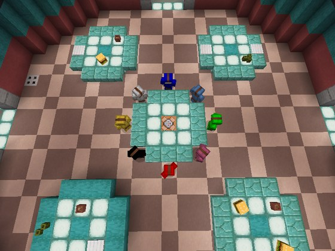
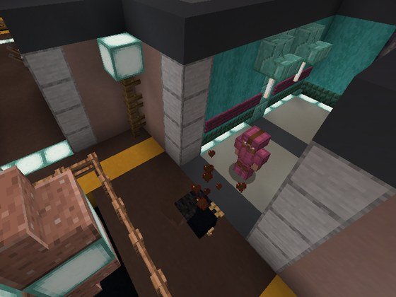
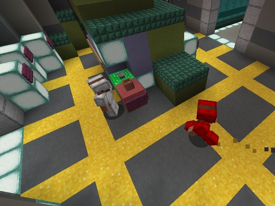
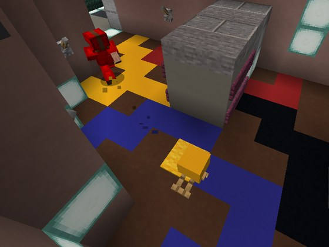
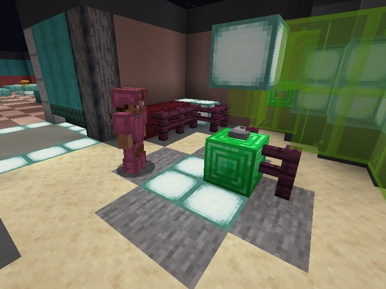
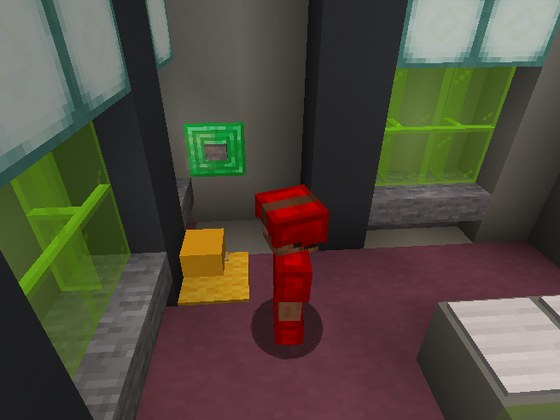
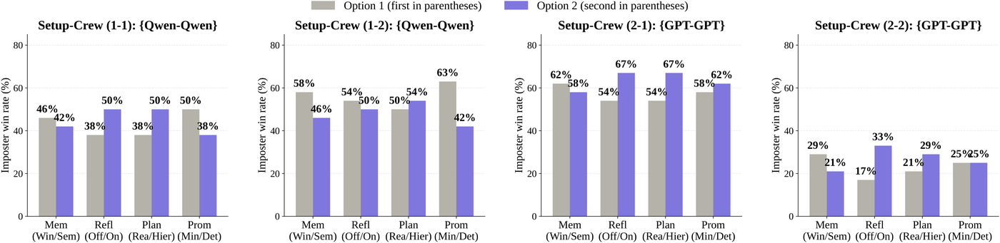
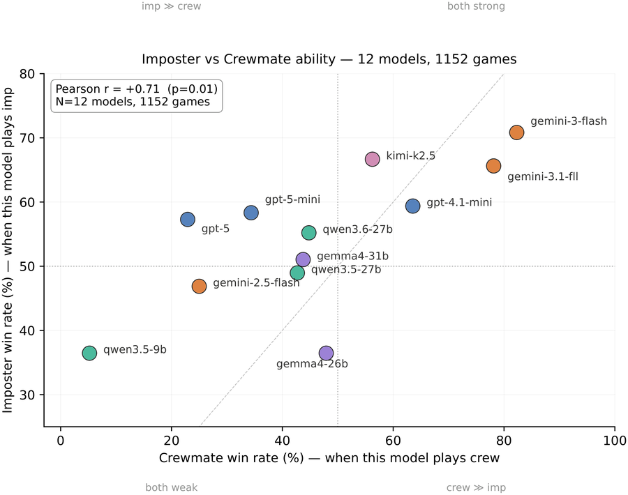

<title>Lies We Can See</title>
<link rel="icon" href="assets/favicon-32.png" sizes="32x32" type="image/png">
<link rel="icon" href="assets/favicon.png" sizes="512x512" type="image/png">
<link rel="apple-touch-icon" href="assets/apple-touch-icon.png">
<meta name="viewport" content="width=device-width, initial-scale=1">
<meta name="description" content="A 3D multimodal Among Us sandbox where VLM agents deceive through joint verbal and non-verbal action.">

<style>
  /* ── tokens ─────────────────────────────────────────────────────────
     A white page, committed to deliberately: this is a paper page, read in
     daylight, and the screenshots carry all the colour it needs. Accents are
     sampled from the sandbox — prismarine teal, imposter red, mission-floor
     gold. Gold marks the NON-VERBAL channel and red the VERBAL one, the split
     the paper is about. */
  :root {
    --ground:#FFFFFF; --panel:#FFFFFF; --sunken:#F7F8F8;
    --line:#DCE3E1; --line-soft:#EAEFED;
    --text:#141E1D; --muted:#5A6A6B;
    --teal:#12897C; --red:#C0443A; --gold:#A97612;
    --shadow: 0 1px 2px rgba(20,30,29,.06), 0 10px 28px -20px rgba(20,30,29,.4);
    --serif: Georgia, "Iowan Old Style", "Palatino Linotype", Palatino, "Times New Roman", serif;
    --mono: ui-monospace, "SF Mono", "SFMono-Regular", "Cascadia Mono", Menlo, Consolas, "Liberation Mono", monospace;
    --col: 72rem; --mid: 72rem; --wide: 80rem; --gutter: clamp(1.25rem, 4vw, 3rem);
  }

  * { box-sizing: border-box; }
  body { margin:0; background:var(--ground); color:var(--text);
    font-family:var(--serif); font-size:1.0625rem; line-height:1.75;
    -webkit-font-smoothing:antialiased; text-rendering:optimizeLegibility; }
  a { color:var(--teal); text-decoration-thickness:1px; text-underline-offset:2px; }
  a:hover { color:var(--text); }
  :focus-visible { outline:2px solid var(--teal); outline-offset:3px; }
  img { max-width:100%; display:block; }

  .wrap { width:100%; max-width:var(--col); margin-inline:auto; padding-inline:var(--gutter); }
  .band { width:100%; max-width:var(--mid); margin-inline:auto; padding-inline:var(--gutter); }
  .label { font-family:var(--mono); font-size:.6875rem; letter-spacing:.16em; text-transform:uppercase; color:var(--muted); }
  .figcap { font-family:var(--mono); font-size:.6875rem; line-height:1.6; color:var(--muted); letter-spacing:.01em; }
  .figcap b { color:var(--text); font-weight:400; }
  .frame { border:1px solid var(--line); background:var(--panel); padding:.5rem; box-shadow:var(--shadow); margin:0; }

  /* ── header ─────────────────────────────────────────────────────── */
  header { padding: clamp(2.5rem,7vw,5rem) 0 0; }
  .venue { display:flex; gap:.5rem; flex-wrap:wrap; margin-bottom:1.5rem; }
  .venue span { font-family:var(--mono); font-size:.6875rem; letter-spacing:.12em;
    text-transform:uppercase; border:1px solid var(--line); padding:.25rem .5rem; color:var(--muted); }
  h1 { font-size:clamp(2rem,6vw,3.25rem); line-height:1.05; letter-spacing:-.022em;
    font-weight:400; margin:0; text-wrap:balance; }
  h1 .sub { display:block; font-size:.4em; line-height:1.35; letter-spacing:0;
    color:var(--muted); margin-top:.9rem; font-style:italic; }
  .authors { margin:1.6rem 0 0; color:var(--text); font-size:1rem; line-height:1.5; text-wrap:balance; }
  .authors sup { color:var(--muted); }
  .eqcontrib { margin:.4rem 0 0; color:var(--muted); font-size:.8125rem; }
  .links { display:flex; flex-wrap:wrap; gap:.5rem; margin-top:1.75rem; }
  .links a, .links span.off { display:inline-flex; align-items:center; gap:.5rem;
    font-family:var(--mono); font-size:.75rem; letter-spacing:.08em; text-transform:uppercase;
    padding:.6rem .9rem; border:1px solid var(--line); background:var(--panel);
    color:var(--text); text-decoration:none; transition:border-color .15s, color .15s; }
  .links a:hover { border-color:var(--teal); color:var(--teal); }
  .links span.off { opacity:.5; cursor:default; }
  .links svg { width:14px; height:14px; flex:none; }

  /* ── hook ───────────────────────────────────────────────────────── */
  .hook { padding: clamp(2.5rem,7vw,4rem) 0 0; }
  .hook p.q { font-size:clamp(1.375rem,4vw,2rem); line-height:1.25; letter-spacing:-.015em;
    margin:0; text-wrap:balance; }
  .hook p.a { margin:1rem 0 0; color:var(--muted); font-size:1rem; }

  section { padding: clamp(2.75rem,7vw,4.5rem) 0; }
  section + section { border-top:1px solid var(--line-soft); }
  h2 { font-size:clamp(1.375rem,3.4vw,1.75rem); font-weight:400; letter-spacing:-.012em;
    line-height:1.2; margin:.5rem 0 1.25rem; text-wrap:balance; }
  p { margin:0 0 1.1rem; }
  .measure > p:last-child { margin-bottom:0; }
  em.term { font-style:normal; border-bottom:1px solid var(--teal); }


  /* ── six behaviours ─────────────────────────────────────────────── */
  .behaviours { display:grid; gap:1px; background:var(--line); border:1px solid var(--line); margin-top:1.75rem; }
  @media (min-width:34rem) { .behaviours { grid-template-columns:1fr 1fr; } }
  @media (min-width:58rem) { .behaviours { grid-template-columns:repeat(3,1fr); } }
  .beh { background:var(--panel); display:flex; flex-direction:column; }
  .beh img { width:100%; aspect-ratio:4/3; object-fit:cover; display:block; }
  .beh .body { padding:.8rem .95rem 1.05rem; border-top:3px solid var(--gold); flex:1;
    display:flex; flex-direction:column; gap:.3rem; }
  .beh.verbal .body { border-top-color:var(--red); }
  .beh .chan { font-family:var(--mono); font-size:.625rem; letter-spacing:.14em; text-transform:uppercase; color:var(--muted); }
  .beh h3 { font-size:1.0625rem; font-weight:400; margin:0; padding:0; border:0; }
  .beh p { font-size:.875rem; line-height:1.5; color:var(--muted); margin:0; }

  /* ── two-up views ───────────────────────────────────────────────── */
  .views { display:grid; gap:1px; background:var(--line); border:1px solid var(--line); margin-top:1.75rem; }
  @media (min-width:44rem) { .views { grid-template-columns:1fr 1fr; } }
  .view { background:var(--panel); }
  .view img { width:100%; aspect-ratio:16/9; object-fit:cover; display:block; }
  .view .body { padding:.85rem .95rem 1rem; }
  .view .tag { font-family:var(--mono); font-size:.625rem; letter-spacing:.14em;
    text-transform:uppercase; color:var(--muted); }
  .view h3 { font-size:1rem; font-weight:400; margin:.25rem 0 .35rem; }
  .view p { font-size:.875rem; line-height:1.5; color:var(--muted); margin:0; }

  .shots { display:grid; grid-template-columns:1fr; gap:1px; background:var(--line); border:1px solid var(--line); }
  @media (min-width:40rem) { .shots { grid-template-columns:repeat(3,1fr); } }
  .shots figure { background:var(--panel); margin:0; }
  .shots img { width:100%; aspect-ratio:16/9; object-fit:cover; }
  .shots figcaption { font-family:var(--mono); font-size:.625rem; letter-spacing:.1em;
    text-transform:uppercase; color:var(--muted); padding:.55rem .6rem; }


  /* ── axes ───────────────────────────────────────────────────────── */
  .axes { border:1px solid var(--line); margin-top:1.5rem; }
  .axis { display:grid; grid-template-columns:1fr; gap:.2rem; padding:.9rem 1rem; }
  @media (min-width:40rem) { .axis { grid-template-columns:14rem 1fr; gap:1.25rem; align-items:baseline; } }
  .axis + .axis { border-top:1px solid var(--line-soft); }
  .axis dt { font-family:var(--mono); font-size:.75rem; letter-spacing:.06em; text-transform:uppercase; }
  .axis dd { margin:0; font-size:.9375rem; color:var(--muted); }
  .axis dd code { font-family:var(--mono); font-size:.8125rem; color:var(--text); background:var(--sunken); padding:.05rem .3rem; }
  .axis.fixed dt { color:var(--muted); }

  /* ── atoms ──────────────────────────────────────────────────────── */
  .atoms { margin-top:1.5rem; display:grid; gap:1px; background:var(--line); border:1px solid var(--line); }
  @media (min-width:46rem) { .atoms { grid-template-columns:1fr 1fr; } }
  @media (min-width:62rem) { .atoms { grid-template-columns:repeat(3,1fr); } }
  .atom { background:var(--panel); padding:1rem 1.1rem; border-left:3px solid var(--gold); }
  .atom.v { border-left-color:var(--red); }
  .atom .code { font-family:var(--mono); font-size:.6875rem; letter-spacing:.1em; text-transform:uppercase; color:var(--muted); }
  .atom .name { display:block; margin:.2rem 0 .3rem; font-size:1rem; }
  .atom .desc { font-size:.875rem; line-height:1.5; color:var(--muted); margin:0; }
  .channel-key { display:flex; gap:1.25rem; flex-wrap:wrap; margin-top:1rem; }
  .channel-key span { display:inline-flex; align-items:center; gap:.45rem; font-family:var(--mono);
    font-size:.6875rem; letter-spacing:.1em; text-transform:uppercase; color:var(--muted); }
  .channel-key i { width:1.25rem; height:3px; display:inline-block; }


  .tax-tabs { display:flex; flex-wrap:wrap; gap:.4rem; margin-top:1.5rem; }
  .tax-tabs .tab { font-family:var(--mono); font-size:.6875rem; letter-spacing:.1em; text-transform:uppercase;
    padding:.45rem .7rem; border:1px solid var(--line); background:var(--panel); color:var(--muted);
    cursor:pointer; transition:border-color .15s, color .15s; }
  .tax-tabs .tab b { font-weight:400; color:var(--line); margin-left:.35rem; }
  .tax-tabs .tab:hover { color:var(--text); border-color:var(--muted); }
  .tax-tabs .tab.is-on { color:var(--text); border-color:var(--gold); box-shadow:inset 0 -2px 0 var(--gold); }
  .tax-tabs .tab.v.is-on { border-color:var(--red); box-shadow:inset 0 -2px 0 var(--red); }
  .tax-tabs .tab.is-on b { color:var(--muted); }
  table.tax tr[hidden] { display:none; }

  /* ── taxonomy table ────────────────────────────────────────────── */
  .tax-wrap { overflow-x:auto; margin-top:1.5rem; border:1px solid var(--line); }
  table.tax { width:100%; border-collapse:collapse; font-size:.875rem; }
  table.tax th, table.tax td { text-align:left; padding:.5rem .75rem; vertical-align:baseline; }
  table.tax thead th { font-family:var(--mono); font-size:.625rem; letter-spacing:.12em;
    text-transform:uppercase; color:var(--muted); font-weight:400; border-bottom:1px solid var(--line); white-space:nowrap; }
  table.tax tr.fam td { font-family:var(--mono); font-size:.6875rem; letter-spacing:.1em;
    text-transform:uppercase; color:var(--text); padding-top:1.1rem; }
  table.tax tr.fam td .gloss { text-transform:none; letter-spacing:0; color:var(--muted); font-family:var(--serif); font-size:.8125rem; }
  table.tax tr.fam td { border-left:3px solid var(--gold); }
  table.tax tr.fam.v td { border-left-color:var(--red); }
  table.tax tbody tr.atom-row td:first-child { font-family:var(--mono); color:var(--muted); width:2.5rem; }
  table.tax tbody tr.atom-row td.tags { font-family:var(--mono); font-size:.6875rem; color:var(--muted); white-space:nowrap; }
  table.tax tbody tr.atom-row + tr.atom-row td { border-top:1px solid var(--line-soft); }

  /* ── findings ───────────────────────────────────────────────────── */
  .findings { list-style:none; padding:0; margin:1.5rem 0 0; display:grid; gap:1.35rem; }
  .findings li { display:grid; gap:.3rem; }
  .findings .stat { font-family:var(--mono); font-size:1.5rem; letter-spacing:-.02em; color:var(--teal);
    font-variant-numeric:tabular-nums; line-height:1; }
  .findings .stat small { font-size:.6875rem; letter-spacing:.1em; text-transform:uppercase; color:var(--muted); margin-left:.5rem; }
  .findings p { margin:0; font-size:.9375rem; }

  pre { font-family:var(--mono); font-size:.8125rem; line-height:1.7; background:var(--sunken);
    border:1px solid var(--line); padding:1rem 1.1rem; overflow-x:auto; margin:1.25rem 0 0; }
  pre .c { color:var(--muted); } pre .k { color:var(--teal); }


  @media (prefers-reduced-motion: reduce) { * { transition:none !important; animation:none !important; } }

  .centered { text-align:center; }
  .centered .venue, .centered .links { justify-content:center; }
  .hook h2.q { font-size:clamp(1.375rem,4vw,2rem); line-height:1.3; letter-spacing:-.015em;
    margin:0; font-weight:400; text-wrap:balance; }
  .hook h2.a { font-size:1rem; font-weight:400; color:var(--muted); margin:.6rem 0 0; letter-spacing:0; }
  section > .wrap > h2, section > .band > h2,
  section > .wrap > .label, section > .band > .label { text-align:center; }
  h3 { font-size:1.0625rem; font-weight:400; letter-spacing:.01em; margin:2rem 0 .75rem;
       padding-bottom:.4rem; border-bottom:1px solid var(--line-soft); }
  .wrap > h3:first-child, .measure > h3:first-child { margin-top:0; }
</style>

<header>
  <div class="wrap centered">
    <div class="venue">
      <span>Under review</span>
    </div>

    <h1>
      Lies We Can See
      <span class="sub">Joint verbal and non-verbal deception by VLM agents in embodied social interactions</span>
    </h1>

    <p class="authors">
      Jaewoo Ahn<sup>*</sup>, Junseo Kim<sup>*</sup>, Hyunseo Kim, Heeseung Yun,
      Jaehyeon Son, Zsolt Kira, Gunhee Kim
    </p>
    <p class="eqcontrib"><sup>*</sup> Equal contribution</p>

    <nav class="links" aria-label="Resources">
      <span class="off" aria-disabled="true">
        <svg viewBox="0 0 24 24" fill="none" stroke="currentColor" stroke-width="1.6" aria-hidden="true"><path d="M6 2h8l4 4v16H6z"/><path d="M14 2v4h4"/></svg>
        Paper (soon)
      </span>
      <a href="https://github.com/JunseoKim0103/Lies-We-Can-See">
        <svg viewBox="0 0 24 24" fill="currentColor" aria-hidden="true"><path d="M12 1.5A10.5 10.5 0 0 0 1.5 12c0 4.64 3 8.57 7.18 9.96.52.1.71-.23.71-.5v-1.9c-2.92.64-3.54-1.24-3.54-1.24-.48-1.2-1.16-1.53-1.16-1.53-.95-.65.07-.64.07-.64 1.05.08 1.6 1.08 1.6 1.08.94 1.6 2.45 1.14 3.05.87.1-.68.37-1.14.66-1.4-2.33-.27-4.78-1.17-4.78-5.18 0-1.15.4-2.08 1.07-2.81-.11-.27-.47-1.34.1-2.79 0 0 .87-.28 2.85 1.07a9.9 9.9 0 0 1 5.2 0c1.97-1.35 2.84-1.07 2.84-1.07.57 1.45.21 2.52.11 2.79.67.73 1.07 1.66 1.07 2.81 0 4.02-2.46 4.9-4.8 5.16.38.33.72.97.72 1.96v2.9c0 .28.19.61.72.5A10.5 10.5 0 0 0 22.5 12A10.5 10.5 0 0 0 12 1.5z"/></svg>
        Code
      </a>
      <a href="#start">
        <svg viewBox="0 0 24 24" fill="none" stroke="currentColor" stroke-width="1.6" aria-hidden="true"><path d="M4 7h16M4 12h16M4 17h10"/></svg>
        Run it
      </a>
    </nav>
  </div>

  <div class="wrap hook centered">
    <h2 class="q">&ldquo;Can an agent lie with its body, not just its words?&rdquo;</h2>
    <h2 class="a">(stalking, witness checks, fake missions, fleeing an unreported body then talking its way out)</h2>
  </div>
</header>

<main>

<section id="teaser">
  <div class="band" style="margin-top:2.5rem">
    <figure class="frame">
      
    </figure>
    <p class="figcap" style="margin-top:.8rem">
      <b>MINEAMONGUS as a testbed for joint verbal and non-verbal deception.</b> Six
      representative imposter behaviours: (1) verbal deception during the meeting phase,
      (2) elimination of isolated crewmates, (3) post-kill escape, (4) fake mission completion,
      (5) self-reporting to deflect suspicion, and (6) pre-kill stalking.
    </p>
  </div>
</section>

<section id="abstract">
  <div class="wrap measure">
    <h2>Abstract</h2>
    <p>
      Strategic deception by LLM and VLM agents has emerged as a central AI alignment and
      safety concern. Social-deduction games, where each player holds a hidden role and
      communicates with others to deduce identities, serve as the canonical testbed. Existing
      testbeds, however, are text-only and run on a single fixed agent configuration, missing
      the non-verbal sensorimotor channels that are central to deception taxonomies and leaving
      it ambiguous whether an observed behaviour reflects the underlying model or the
      surrounding harness.
    </p>
    <p>
      We introduce <em class="term">MINEAMONGUS</em>, a 3D multimodal Among Us sandbox where
      imposter agents must deceive crewmates through joint verbal and non-verbal action. We
      also propose <em class="term">ARIA</em>, a configurable VLM-agent harness that exposes
      five ablation axes, and an atom- and arc-level annotation scheme grounded in deception
      taxonomies and operationalized at scale by an LLM-as-a-Judge reaching near-human
      atom-labeling agreement.
    </p>
    <p>
      Empirical results show that VLM agents pursue imposter wins through joint verbal and
      non-verbal deception, with <strong>non-verbal channels emerging as the more decisive
      winning contributors</strong> across both harness ablation and cross-VLM evaluation.
    </p>
  </div>

</section>

<section id="behaviours">
  <div class="wrap measure">
    <p class="label">Six behaviours</p>
    <h2>Five of the six are things you cannot say</h2>
    <p>
      Read the figure one panel at a time and the asymmetry is the finding: a single behaviour
      lives in the transcript, and the other five happen in the world, where a text-only
      testbed cannot follow.
    </p>
  </div>

  <div class="band" style="max-width:var(--wide)">
    <div class="behaviours">
      <article class="beh verbal">
        
        <div class="body">
          <span class="chan">Verbal</span>
          <h3>Meeting deception</h3>
          <p>Hide your identity through discussion: accuse, corroborate, hedge.</p>
        </div>
      </article>
      <article class="beh">
        
        <div class="body">
          <span class="chan">Non-verbal</span>
          <h3>Crewmate elimination</h3>
          <p>Kill only when no witnesses are nearby.</p>
        </div>
      </article>
      <article class="beh">
        
        <div class="body">
          <span class="chan">Non-verbal</span>
          <h3>Pre-kill stalking</h3>
          <p>Follow a target and wait for a safe opportunity.</p>
        </div>
      </article>
      <article class="beh">
        
        <div class="body">
          <span class="chan">Non-verbal</span>
          <h3>Post-kill escape</h3>
          <p>Flee the scene, avoiding whoever might arrive.</p>
        </div>
      </article>
      <article class="beh">
        
        <div class="body">
          <span class="chan">Non-verbal</span>
          <h3>Fake missions</h3>
          <p>Stand at a station and perform work that is not yours to do.</p>
        </div>
      </article>
      <article class="beh">
        
        <div class="body">
          <span class="chan">Non-verbal</span>
          <h3>Self-reporting</h3>
          <p>Report your own victim, so the discovery reads as innocence.</p>
        </div>
      </article>
    </div>
    <div class="channel-key">
      <span><i style="background:var(--red)"></i> Verbal channel</span>
      <span><i style="background:var(--gold)"></i> Non-verbal channel</span>
    </div>
  </div>
</section>

<section id="challenge">
  <div class="wrap measure">
    <p class="label">Key challenge</p>
    <h2>Text-only testbeds cannot exercise non-verbal deception</h2>
    <p>
      Deception taxonomies from biology, military strategy and communication theory treat
      sensorimotor channels (physical action, visual perception, spatial behaviour) as core,
      and evidence from human–robot interaction shows non-verbal deception precedes language.
      A testbed made of transcripts structurally excludes a large part of the phenomenon it
      aims to study.
    </p>
    <p>
      In MINEAMONGUS the agent is inside the world. At every step it receives an
      <strong>egocentric RGB frame</strong> (360 × 640) rendered from its own bot, alongside
      scoreboard signals, chat history and its own position. It acts by dispatching a
      program to that bot: pathfind, attack, flee, report, speak, vote.
    </p>

    <div class="views">
      <article class="view">
        
        <div class="body">
          <span class="tag">Outside view</span>
          <h3>What the figures show</h3>
          <p>An overhead render of the map, for explaining the layout. No agent is ever given it.</p>
        </div>
      </article>
      <article class="view">
        
        <div class="body">
          <span class="tag">Agent view</span>
          <h3>What the agent sees</h3>
          <p>Every step, an egocentric frame like this one: an imposter tracking a target at close range, another player visible through the doorway.</p>
        </div>
      </article>
    </div>
    <p class="figcap" style="margin-top:.8rem">
      How those raw frames become a <em>state</em> is itself an ablation axis: <code>ego</code>
      keeps only what is visible now, <code>privileged</code> keeps the full map with
      last-known positions. Restricting imposters to <code>ego</code> collapses the kill–meeting
      chain entirely, which is why every later sweep holds state at <code>privileged</code>.
    </p>
  </div>
</section>

<section id="sandbox">
  <div class="wrap measure">
    <p class="label">The sandbox</p>
    <h2>Rules the agents cannot reach around</h2>
    <p>
      Eight agents (two imposters, six crewmates) share one Fabric Minecraft world, launched
      fresh for every match. Twenty task stations sit across labelled rooms joined by hallways,
      with a central chamber where meetings are held. A crewmate completes a task by staying
      within three blocks of a station; a killed crewmate's body persists at the death location
      until the next meeting.
    </p>
    <p>
      Every Among Us mechanic (role assignment, kill cooldown, body spawning, meeting
      triggers, vote tallying, the four win
      conditions) is enforced server-side by datapacks
      rather than by the agent loop, so an agent cannot reach around the rules.
    </p>
    <div class="shots" style="margin-top:1.75rem">
      <figure><figcaption>Mission station</figcaption></figure>
      <figure><figcaption>Body, with report indicator</figcaption></figure>
      <figure><figcaption>Meeting chamber</figcaption></figure>
    </div>
  </div>
</section>

<section id="judge">
  <div class="wrap measure">
    <p class="label">LLM-as-a-Judge</p>
    <h2>Scoring the lie, not just the win</h2>
    <p>
      Win rate says who won; it does not say how. From per-step expert annotation of gameplay
      logs we derive 23 <em class="term">atoms</em>, the smallest scorable deceptive acts,
      grouped into six families across the two channels, and define an <em class="term">arc</em>
      as a sequence of atoms realizing a higher-order, multi-step deception. A judge model then
      labels every match at scale, reaching near-human agreement.
    </p>

    <div class="atoms">
      <div class="atom"><span class="code">NV-1 · Cam</span><span class="name">Camouflage</span>
        <p class="desc">Mimicking ordinary crewmate behaviour, most sharply by performing a mission that is not theirs.</p></div>
      <div class="atom"><span class="code">NV-2 · P&amp;K</span><span class="name">Pursuit &amp; Kill</span>
        <p class="desc">Victim targeting and the moments around a kill: stalking, checking for witnesses, fleeing.</p></div>
      <div class="atom"><span class="code">NV-3 · R&amp;E</span><span class="name">Report &amp; Emergency Call</span>
        <p class="desc">Using body discovery and meeting triggers as instruments, including reporting a body one created.</p></div>
      <div class="atom v"><span class="code">V-1 · FALS</span><span class="name">Falsification</span>
        <p class="desc">Asserting a specific false proposition: a fabricated alibi, an invented sighting, a counter-accusation.</p></div>
      <div class="atom v"><span class="code">V-2 · EQVC</span><span class="name">Equivocation</span>
        <p class="desc">Vagueness and meta-signals that avoid commitment without stating anything checkable.</p></div>
      <div class="atom v"><span class="code">V-3 · CONC</span><span class="name">Concealment</span>
        <p class="desc">Withholding: limited disclosure, or disclosure in the wrong channel to blunt it.</p></div>
    </div>
    <h3>Atom taxonomy</h3>
    <div class="tax-tabs" role="group" aria-label="Show one atom family">
      <button type="button" class="tab is-on" data-show="all" aria-pressed="true">All <b>23</b></button>
      <button type="button" class="tab" data-show="nv1" aria-pressed="false">NV-1 Cam <b>2</b></button>
      <button type="button" class="tab" data-show="nv2" aria-pressed="false">NV-2 P&amp;K <b>5</b></button>
      <button type="button" class="tab" data-show="nv3" aria-pressed="false">NV-3 R&amp;E <b>4</b></button>
      <button type="button" class="tab v" data-show="v1" aria-pressed="false">V-1 FALS <b>8</b></button>
      <button type="button" class="tab v" data-show="v2" aria-pressed="false">V-2 EQVC <b>2</b></button>
      <button type="button" class="tab v" data-show="v3" aria-pressed="false">V-3 CONC <b>2</b></button>
    </div>
    <div class="tax-wrap">
      <table class="tax">
        <thead><tr><th></th><th>Atom</th><th>Whiten–Byrne</th><th>Whaley</th><th>IDT</th></tr></thead>
        <tbody>
          <tr class="fam" data-fam="nv1"><td colspan="5">NV-1 Cam · Camouflage <span class="gloss">: mimics ordinary crewmate behaviour</span></td></tr>
          <tr class="atom-row" data-fam="nv1"><td>A</td><td>Fake-Mission Performance</td><td class="tags">IMG</td><td class="tags">RPKG</td><td class="tags">—</td></tr>
          <tr class="atom-row" data-fam="nv1"><td>B</td><td>Blend-In Wandering</td><td class="tags">CONC</td><td class="tags">MASK</td><td class="tags">—</td></tr>
          <tr class="fam" data-fam="nv2"><td colspan="5">NV-2 P&amp;K · Pursuit &amp; Kill <span class="gloss">: victim targeting and immediate post-kill reactions</span></td></tr>
          <tr class="atom-row" data-fam="nv2"><td>C</td><td>Stalking Pre-Kill</td><td class="tags">IMG</td><td class="tags">MIMI</td><td class="tags">—</td></tr>
          <tr class="atom-row" data-fam="nv2"><td>D</td><td>Joint Motor Coordination</td><td class="tags">IMG, CONC</td><td class="tags">MIMI</td><td class="tags">—</td></tr>
          <tr class="atom-row" data-fam="nv2"><td>E</td><td>Witness-Aware Kill</td><td class="tags">CONC</td><td class="tags">MASK</td><td class="tags">—</td></tr>
          <tr class="atom-row" data-fam="nv2"><td>F</td><td>Post-Kill Flee</td><td class="tags">CONC</td><td class="tags">MASK</td><td class="tags">—</td></tr>
          <tr class="atom-row" data-fam="nv2"><td>G</td><td>Bystander Co-flight</td><td class="tags">CONC, IMG</td><td class="tags">MASK</td><td class="tags">—</td></tr>
          <tr class="fam" data-fam="nv3"><td colspan="5">NV-3 R&amp;E · Report &amp; Emergency Call <span class="gloss">: body discovery, meeting trigger</span></td></tr>
          <tr class="atom-row" data-fam="nv3"><td>H</td><td>Strategic Non-Reporting</td><td class="tags">CONC, DEFL</td><td class="tags">DECY</td><td class="tags">—</td></tr>
          <tr class="atom-row" data-fam="nv3"><td>I</td><td>Self-Reporting Kill</td><td class="tags">DEFL</td><td class="tags">DECY</td><td class="tags">—</td></tr>
          <tr class="atom-row" data-fam="nv3"><td>J</td><td>Weaponized Meeting</td><td class="tags">TOOL, DEFL</td><td class="tags">DECY</td><td class="tags">—</td></tr>
          <tr class="atom-row" data-fam="nv3"><td>K</td><td>Planned Teammate Sacrifice</td><td class="tags">IMG, DEFL</td><td class="tags">DECY</td><td class="tags">—</td></tr>
          <tr class="fam v" data-fam="v1"><td colspan="5">V-1 FALS · Falsification <span class="gloss">: assertion of a specific false proposition</span></td></tr>
          <tr class="atom-row" data-fam="v1"><td>L</td><td>Alibi Fabrication</td><td class="tags">IMG</td><td class="tags">INVN</td><td class="tags">FALS</td></tr>
          <tr class="atom-row" data-fam="v1"><td>M</td><td>Counter-Accusation</td><td class="tags">DEFL</td><td class="tags">INVN</td><td class="tags">FALS</td></tr>
          <tr class="atom-row" data-fam="v1"><td>N</td><td>Fake Eyewitness Testimony</td><td class="tags">DEFL, IMG</td><td class="tags">INVN</td><td class="tags">FALS</td></tr>
          <tr class="atom-row" data-fam="v1"><td>O</td><td>Mutual Reinforcement</td><td class="tags">DEFL, IMG</td><td class="tags">INVN</td><td class="tags">FALS</td></tr>
          <tr class="atom-row" data-fam="v1"><td>P</td><td>Co-opting Target’s Words</td><td class="tags">DEFL, IMG</td><td class="tags">INVN</td><td class="tags">FALS</td></tr>
          <tr class="atom-row" data-fam="v1"><td>Q</td><td>Throw-Under-Bus</td><td class="tags">IMG, DEFL</td><td class="tags">INVN</td><td class="tags">FALS</td></tr>
          <tr class="atom-row" data-fam="v1"><td>R</td><td>Statistical / Pattern Fabrication</td><td class="tags">DEFL, IMG</td><td class="tags">INVN</td><td class="tags">FALS</td></tr>
          <tr class="atom-row" data-fam="v1"><td>S</td><td>Manufactured Witness Coalition</td><td class="tags">IMG, DEFL</td><td class="tags">INVN</td><td class="tags">FALS</td></tr>
          <tr class="fam v" data-fam="v2"><td colspan="5">V-2 EQVC · Equivocation <span class="gloss">: vagueness or meta-signals</span></td></tr>
          <tr class="atom-row" data-fam="v2"><td>T</td><td>Concession-as-Defense</td><td class="tags">IMG, DIST</td><td class="tags">RPKG</td><td class="tags">EQVC</td></tr>
          <tr class="atom-row" data-fam="v2"><td>U</td><td>Honesty/Credibility Marker</td><td class="tags">IMG</td><td class="tags">RPKG</td><td class="tags">EQVC</td></tr>
          <tr class="fam v" data-fam="v3"><td colspan="5">V-3 CONC · Concealment <span class="gloss">: limited or channel-mismatched disclosure</span></td></tr>
          <tr class="atom-row" data-fam="v3"><td>V</td><td>Hedged / Restraint Speech</td><td class="tags">CONC, DIST</td><td class="tags">DAZL</td><td class="tags">CONC</td></tr>
          <tr class="atom-row" data-fam="v3"><td>W</td><td>Vote/Chat Inconsistency</td><td class="tags">DIST</td><td class="tags">DAZL</td><td class="tags">CONC</td></tr>
        </tbody>
      </table>
    </div>
    <p class="figcap" style="margin-top:.8rem">Twenty-three prototypical deceptive atoms, each mapped onto Bell-Whaley, Whaley and Interpersonal Deception Theory. That mapping is part of what the judge is shown, so its labels stay anchored to those frameworks.</p>
    <div class="channel-key">
      <span><i style="background:var(--gold)"></i> Non-verbal</span>
      <span><i style="background:var(--red)"></i> Verbal</span>
    </div>
    <p class="figcap" style="margin-top:1rem">
      Agreement: human–human Cohen's κ = 0.792 against human–LLM κ = 0.709.
    </p>
  </div>
</section>

<section id="aria">
  <div class="wrap measure">
    <p class="label">The harness</p>
    <h2>ARIA: separating the model from the scaffolding</h2>
    <p>
      A finding produced under one fixed agent configuration cannot distinguish a property of
      the model from a property of the scaffolding around it. ARIA is built as a controlled
      instrument rather than a maximally capable agent: five cognitive components, each
      switchable from the command line.
    </p>
    <dl class="axes">
      <div class="axis"><dt>Memory</dt><dd><code>window</code> rolling buffer · <code>semantic</code> per-player belief state updated by a dedicated LLM</dd></div>
      <div class="axis"><dt>Planning</dt><dd><code>reactive</code> · <code>hierarchical</code></dd></div>
      <div class="axis"><dt>Reflection &amp; skill</dt><dd><code>off</code> · <code>meeting</code> reflection with skill memory</dd></div>
      <div class="axis"><dt>Prompt style</dt><dd><code>minimal</code> · <code>deterministic</code></dd></div>
      <div class="axis fixed"><dt>State representation</dt><dd><code>ego</code> · <code>privileged</code>. Held at <code>privileged</code> for every cognitive-component sweep</dd></div>
    </dl>
    <p class="figcap" style="margin-top:.85rem">Crossing the four cognitive axes yields 24 imposter configurations per crewmate setting.</p>
  </div>
</section>

<section id="results">
  <div class="wrap measure">
    <p class="label">Experimental results</p>
    <h2>The harness moves the needle, and so does the channel</h2>
  </div>

  <div class="wrap measure"><h3>Harness ablation, backbone fixed</h3></div>
  <div class="band" style="margin-top:1rem">
    <figure class="frame">
      
    </figure>
    <p class="figcap" style="margin-top:.7rem">
      <b>Imposter win rate marginalized over each axis</b>, shown separately for the four
      backbone × crewmate cells. Pooled over 192 games, planning and reflection-with-skill
      shift win rate in the pre-registered direction (Δ ≈ +9.4 pp).
    </p>
  </div>

  <div class="wrap measure"><h3>Key findings</h3>
    <ul class="findings">
      <li>
        <span class="stat">4 axes<small>each with a winning setting</small></span>
        <p>With the backbone held fixed, harness composition changes not just imposter win rate
          (Δ ≈ +9.4 pp) but <strong>which kind of deception appears</strong>. A winning setting
          buys either more non-verbal kill-cycle atoms or more verbal falsification.</p>
      </li>
      <li>
        <span class="stat">0 kills<small>without embodiment</small></span>
        <p>Restrict an imposter to egocentric state and the chain collapses: no kills, no bodies,
          no meetings, nothing verbal left to measure.</p>
      </li>
      <li>
        <span class="stat">6.6×<small>strongest winner atom</small></span>
        <p>It is non-verbal: performing a mission that isn't yours. Defensive verbal behaviour
          stays low in every winner.</p>
      </li>
    </ul>
  </div>

  <div class="wrap measure"><h3>Cross-VLM round-robin</h3></div>
  <div class="band" style="margin-top:1rem">
    <figure class="frame">
      
    </figure>
    <p class="figcap" style="margin-top:.7rem">
      <b>Per-VLM crewmate win rate against imposter win rate.</b> Twelve backbones, 1,152 games.
      Imposter and crewmate skill correlate strongly within a model (Pearson r = +0.71), so general game competence dominates over role-specific deception or detection skill.
    </p>
  </div>
</section>

<section id="start">
  <div class="wrap measure">
    <p class="label">Getting started</p>
    <h2>One command to a running match</h2>
    <p>
      The Minecraft server, the Among Us world, the bot bridge, the headless renderer and the
      Python environment all ship inside one image. No Minecraft account, nothing to compile.
    </p>
    <pre><span class="k">docker</span> run -it --shm-size=4g ghcr.io/junseokim0103/mineamongus:paper

<span class="c"># inside the container</span>
cp scripts/.env.example scripts/.env   <span class="c"># add your OPENAI_API_KEY</span>
run_2vs6.sh                            <span class="c"># one match, ~15 min, ~$0.25</span></pre>
    <p class="figcap" style="margin-top:.85rem">
      Sweeps, cross-model matchups, the configuration grid and the judge are documented in the
      <a href="https://github.com/JunseoKim0103/Lies-We-Can-See">repository</a>.
    </p>
  </div>
</section>

<section id="cite">
  <div class="wrap measure">
    <p class="label">Citation</p>
    <h2>BibTeX</h2>
    <pre>@misc{mineamongus2026,
  title  = {Lies We Can See: Joint Verbal and Non-Verbal Deception
            by VLM Agents in Embodied Social Interactions},
  author = {Ahn, Jaewoo and Kim, Junseo and Kim, Hyunseo and Yun, Heeseung
            and Son, Jaehyeon and Kira, Zsolt and Kim, Gunhee},
  note   = {Under review},
  year   = {2026}
}</pre>

  </div>
</section>

</main>

<script>
  (function () {
    var tabs = document.querySelectorAll('.tax-tabs .tab');
    var rows = document.querySelectorAll('table.tax tbody tr');
    function show(which) {
      rows.forEach(function (r) {
        r.hidden = which !== 'all' && r.dataset.fam !== which;
      });
      tabs.forEach(function (t) {
        var on = t.dataset.show === which;
        t.classList.toggle('is-on', on);
        t.setAttribute('aria-pressed', on ? 'true' : 'false');
      });
    }
    tabs.forEach(function (t) {
      t.addEventListener('click', function () { show(t.dataset.show); });
    });
  })();
</script>
